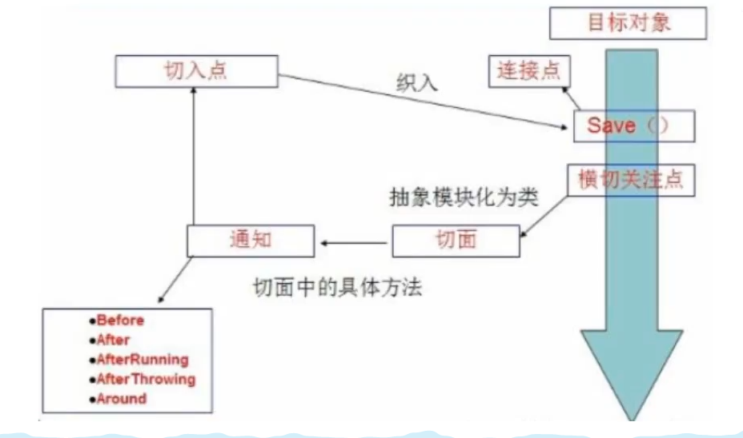

hsrp
stp： OSI 第 2 层协议
- 避免第二层环路
osp
gre隧道
1、public（静态资源）
公共，优先级最低（建议放js）
2、static（静态资源）
静态资源，优先级居中（建议放图片、首页）
3、resource（静态资源）
优先级最高，（建议放上传的文件）
4、自定义静态资源目录：application.yml
spring.mvc.static-path-pattern:
5、templates
相当于WEB-INF，只能通过Controller访问（需要模板引擎支持），安全性高（建议放模板、首页）
放html文件，用于前后端数据交互
1、Thymeleaf依赖
注意版本问题
1 | <dependency> |
2、html头文件
1 | xmlns:th="http://www.thymeleaf.org" |
3、Thymeleaf语法
url：@{}
取值：#{}
1 | <dependencies> |
1 | # 设置首页路径 |

1 | CREATE DATABASE ssm; |
1 | <!--依赖--> |
1 | com.czm.pojo |
Mybatis-config.xml
1 |
|
applicationContext.xml
1 |
|
1）数据库配置文件 database.properties
1 | = com.mysql.jdbc.Driver |
2）编写实体类
3）编写实体类对应的dao层接口
4）编写接口对应的mapper.xml（sql）
5）注册mapper
1）编写接口对应的业务接口
2）接口实现类（调用dao层）
编写spring-dao.xml
1 |
|
编写spring-service.xml
1 |
|
1 |
|
创建/WEB-INF/jsp/软件包
1 |
|
1、pom.xml
1 | <!--添加依赖--> |
2、Mybatis-config.xml
1 |
|
封装Mybatis工具类，获取sqlSession对象
1 | import org.apache.ibatis.io.Resources; |
实体类数据操作接口(dao/mapper)1 |
|
id：相当于方法名
resultType：相当于sql语句返回值类型
parameterType：相当于`参数类型
mapper.xml
1 | <!--select查询全部用户--> |
测试
1 |
|
mapper.xml
1 | <insert id="addUser" parameterType="com.czm.pojo.User"> |
测试
1 | // 增删改需要提交事务 |
mapper.xml
1 | <update id="updateUser" parameterType="com.czm.pojo.User"> |
测试
1 |
|
mapper.xml
1 | <delete id="deleteUser" parameterType="int"> |
测试
1 |
|
假设实体类中字段较多，考虑使用万能Map
map传参，直接在sql中去key即可
对象传参，在sql中取对象的字段名
多个参数用Map或注解
接口
1 | int updateUser2(Map<String, Object> map); |
mapper.xml
1 | <update id="updateUser2" parameterType="map"> |
测试
1 | //万能Map |
在Java代码中，传递通配符
1 | final List<User> userList = userMapper.getUserLike("%李%"); |
在sql中拼接通配符（存在sql注入问题）
1 | select * from user where name like "%"#{value}"%" |
mybatis-config.xml
1 | configuration（配置） |
Mybatis可配置多套运行环境，但只能选择一种环境运行
学会配置多套运行环境
Mybatis默认事务管理器是：JDBC（JDBC、MANAGED）。连接池：POOLED
properties属性用来引入外部配置文件
1）编写一个配置文件db.properties
1 | driver = com.mysql.cj.jdbc.Driver |
2）在核心配置文件中引入
1 | <properties resource="db.properties"/> |
如果既引用了外部文件又在核心配置文件中配置了数据库，优先级外部文件高于内部配置
类型别名可为 Java 类型设置一个缩写名字。 它仅用于 XML 配置，意在降低冗余的全限定类名书写。
核心配置文件
1 | <typeAliases> |
mapper.xml
1 | <select id="getUserList" resultType="User"> |
当这样配置时，User 可以用在任何使用 com.czm.pojo.User 的地方。
也可以指定一个包名，MyBatis 会在包名下面搜索需要的 Java Bean，比如：
核心配置文件
1 | <typeAliases> |
mapper.xml
1 | <select id="getUserList" resultType="user"> |
每一个在包 com.czm.pojo 中的 Java Bean，在没有注解的情况下，会使用 Bean 的首字母小写的非限定类名来作为它的别名。 比如 com.czm.pojo.User 的别名为 user；若有注解，则别名为其注解值。见下面的例子：
1 |
|
总结
第一种可以diy，第二种则需要注解才能diy
实体类较多用第二种，否则第一种
这是 MyBatis 中极为重要的调整设置，它们会改变 MyBatis 的运行时行为。


注册mapper：MapperRegistry
方式一：【推荐使用】
1 | <!--每个mapper.xml都需要到Mybatis核心配置文件中注册--> |
方式二：绑定class文件注册
1 | <!--每个mapper.xml都需要到Mybatis核心配置文件中注册--> |
方式三：包扫描注册
1 | <!--每个mapper.xml都需要到Mybatis核心配置文件中注册--> |
生命周期和作用域是至关重要的，错误的使用会导致非常严重的并发问题
一旦创建了 SqlSessionFactory，就不再需要它了
局部变量
可以想象成：数据库连接池
一旦被创建就应该在应用的运行期间一直存在
最佳作用域是应用作用域（全局变量）。 有很多方法可以做到，最简单的就是使用单例模式或者静态单例模式。
连接到连接池的一个请求
SqlSession 的实例不是线程安全的，因此是不能被共享的，所以它的最佳的作用域是请求或方法作用域。
用完之后赶紧关闭，否则造成资源浪费，错误的使用会导致非常严重的并发问题
1 | try (SqlSession session = sqlSessionFactory.openSession()) { |

这里面的每一个mapper，就代表一个具体的业务
解决属性名和字段名不一致导致的查询为空问题
方式一：
1 | -- select *from mybatis.user where id = #{id} 改为： |
方式二：ResultMap
1 | <!--结果集映射--> |
Mybatis核心配置文件
1 | <settings> |
添加依赖
1 | <dependency> |
log4j.properties
1 | #将等级为DEBUG的日志信息输出到console和fiLe这两个目的地，console和file的定义在下面的代码 |
配置log4j为日志的实现
1 | <settings> |
LOG4J的使用
导包
1 | import org.apache.log4j.Logger; |
测试
1 | public class UserMapperTest { |
limit语法
1 | select * from user limit 1,2; -- select * from user limit startIndex,pageSize; |
使用Mybatis实现分页，核心SQL
接口
1 | List<User> getUserByLimit(Map<String, Integer> map); |
mapper.xml
1 | <resultMap id="getUserByLimitMap" type="User"> |
测试
1 |
|
sql
1 | use mybatis; |
1、接口
1 | public interface StudentMapper { |
1 | public interface TeacherMapper { |
2、mapper.xml
1 | <mapper namespace="com.czm.dao.StudentMapper"> |
3、测试
1 |
|
结果：
1 | Student(id=1, name=李子1, teacher=Teacher(id=null, name=李老师)) |
Servlet是Server与Applet的缩写，是服务端小程序的意思。使用Java语言编写的服务器端程序，可以像生成动态的WEB页,Servlet主要运行在服务器端，并由服务器调用执行，是一种按照Servlet标准来开发的类。是SUN公司提供的一门用于开发动态Web资源的技术。(言外之意:要实现web开发，需要实现Servlet标准)
Servlet本质上也是Java类，但要遵循Servlet规范进行编写，没有 main()方法，它的创建、使用、销毁都由Servlet容器进行管理(如Tomcat)。(言外之意:写自己的类，不用写main方法，别人自动调用)
Servlet是和HTTP协议是紧密联系的，其可以处理HTTP协议相关的所有内容。这也是Servlet应用广泛的原因之一。
提供了Servlet功能的服务器，叫做Servlet容器，其常见容器有很多，如Tomcat, Jetty, WebLogic Server,WebSphere,JBoss 等等。
根据web请求头中的host找到服务器
根据请求行（post、get）获取访问的资源路径，找到对应的servlet类
类加载与其初始化：
servlet容器将servlet加载到内存，（第一次访问）容器创建servlet实例（非首次直接调用），通过init方法进行初始化
服务阶段：
调用Service()方法，Service()方法根据请求方法调用对应的处理方法doPost()或doGet()，还有一些其他的请求方法doPut()、 doOptions()…但这些方法不常用，并且从安全的角度都是建议屏蔽的。
销毁：
处理完请求调用Destroy()方法销毁servlet
每一个不同的请求对应一个不同的servlet
HttpServletRequest对象，将Web客户端请求的信息封装到这个对象中HttpServletResponse对象HttpServletRequest对象的有关方法，获取Http请求信息HttpServletResponse对象的有关方法，生成响应数据获取请求的完整路径：
1 | req.getRequestURL() |
获取资源定位符：
1 | req.getRequestURI() |
获取请求参数：
1 | req.getQueryString() |
获取请求方法：
1 | req.getMethod() |
获取当前协议版本信息：
1 | req.getProtocol() |
获取项目站点：
1 | req.getContextPath() |
指定名称获取参数：
1 | req.getParameter() |
指定名称获取多个参数（用于复选框）：
1 | req.getParameterValues() |
tomcat：
1、tomcat8（及以上）：Get()方法不会乱码；Post()方法会乱码
2、tomcat7（及以下）：Get()方法会乱码；Post()方法会乱码
原因：Post方法在解析过程中默认编码方式为 ISO-8859-1(此编码不支持中文)，所以一定会乱码
解决方法：
1 | req.setCharacterEncoding("UTF-8"); |
注意：
1、req.setCharacterEncoding("UTF-8")只针对post请求
2、new String(req.getParameter("name").getBytes("ISO-8859-1"), "UTF-8")针对任何情况。不乱码使用会乱码
```java
req.getRequestDispatcher(“ /servlet or xxx.jsp/html “).forward(req, resp);
1 |
|
2.设置请求转发（转发到index.jsp为例）：
1 | req.getRequestDispatcher("index.jsp").forward(req, resp); |
3.根据key获取value（在index.jsp页面）：req.getAttribute(key);
1 | <% |
getWriter()：字符输出流，只输出字符串getOutputStream()：字节输出流，输出任意类型数据java.lang.IllegalStateExceptiongetWriter()/getOutputStream()getWriter().write()/getOutputStream().write()1.分别设置服务端、客户端编码
1.服务端：
1 | resp.setCharacterEncoding("UTF-8"); |
2.客户端：
1 | resp.setHeader("content-type", "text/html;charset=UTF-8"); |
2.统一设置服务端客户端编码：
1 | resp.setContentType("text/html;charset=UTF-8"); |
3.输出数据：
1 | resp.getWriter().write(); |
1 | /** |
重点关注
物理威胁
包括连接内网的WIFI、门禁、安保巡逻、监控设备等。
数据
代码泄露、文档信息泄露、邮箱信息泄露、历史漏洞泄露。
系统
包括域名、IP地址、C段、开放端口【高位风险端口（22、445、3389、1521、7001）】、运行服务、web中间件、web应用、移动应用、网络架构、网络策略、业务逻辑关系梳理等。
供应商信息
包括相关合同、系统版本、软件、硬件、代码、服务、人员等。
内网资产梳理
未知资产发现
通过对内网网段的探测，发现存活的资产和现状梳理的资产进行比对，发现未知资产；
可以通过流量审计发现未知资产通讯的相关业务，顺藤摸瓜；
内网资产梳理
识别内网系统的操作类型、中间件、数据库、内网设备、开发组件、端口服务等，进行资产盘点和有效的分类。
目标系统梳理
目标系统关键链路是否定级、安全检查、渗透测试，同区域、同网段部署的业务系统等，针对目标系统相关资产（网络设备、安全设备、主机系统），分析梳理可能的攻击路径。
互联网暴露面梳理
存货资产发现
对服务单位的互联网地址段进行存活IP的挖掘
开放端口检查
存活IP地址所开放的端口发现
开放服务类
开放端口所部署的服务内容进行分类
APP查找
服务单位APP相关信息查找
公众号和小程序查找
服务单位公众号和小程序相关信息查找
网盘信息搜索
网盘留存文件信息查找
暗网信息搜素
通过暗网查询是否存在数据泄露情况
工具
路径评估
对抗性安全运营体系评估
基础安全评估
重点账号安全审计
针对重点系统：堡垒机、4A、域控、VPN等
敏感信息检测
专项评估
1 | <dependencies> |
1、格式
1 |
|
2、配置项
1）别名
1 | <!--如果添加了别名，也可以使用别名来获取这个对象--> |
2）Bean的配置
1 | <!-- |
3.import
1 | <!--团队开发中使用，将多个配置文件导入到总配置文件中--> |

1、默认：
在getBean()时，通过类的无参构造方法创建其实例，并通过其set方法为实例设置属性值。
2、有参构造：三种方式配置beans.xml文件
方式一：引用别的bean或直接通过参数名
1）引用别的bean
1 | <beans> |
2）直接通过参数名
1 | <beans> |
方式二：通过类型
1 | <beans> |
方式三：通过有参构造的参数下标
1 | <beans> |
1）构造函数注入（c命名空间）
①、解释：
构造器依赖注入通过容器触发一个类的构造器来实现的，该类有一些列参数，每个参数代表对一个对其他类的依赖
②、实现：
1 | <!--Hello类中必须要有有参构造函数--> |
2）setter方法注入（p命名空间）
①、解释：
Setter方法注入是容器通过调用无参构造器或无参static工厂方法实例化bean之后，调用该bean的setter方法，即实现了基于setter的依赖注入。
②、实现：
1 | <!--Hello类中必须要有无参构造函数及set方法--> |
③、具体数据类型注入
1 | <beans> |
3）注：
1、byName
1 | <bean id="cat" class="com.czm.pojo.Cat"/> |
2、byType
1 | <bean class="com.czm.pojo.Cat"/> |
3、注解实现自动装配
1）导入约束：xmlns:context=”http://www.springframework.org/schema/context"
2）配置注解支持：<context:annotation-config/>
1 |
|
3）@Autowired与@Resource
①、@Autowired
如果IOC容器中有类型和ID均不唯一的bean，则@Autowired不能自动装配，需要加上@Qualifier(value=”xxx”)来指定装配bean
②、@Resource
③、@Autowired与@Resource区别
④、小结
⑤、更多见此
1、@Autowired: 自动装配默认通过类型
如果byType不能唯一自动装配上属性，则需要加上@Qualifier(value=”xxx”)来指定ID装配bean
2、@Nullable: 被标记的属性可以为空
3、@Resource: 自动装配默认通过名字，可以通过name和type属性进行选择性注入
在SpringMVC中，@Component的衍生注解：
这四个注解名称不同，用法相同
1、xml
2、注解
3、xml与注解最佳实战
xml用来管理bean
注解只负责属性值的注入
注意：必须开启注解支持
1 | <!--开启注解支持--> |
1、实体类
1 | package com.czm.pojo; |
2、配置类
1）Config
1 | package com.czm.config; |
2）Config02
1 | package com.czm.config; |
3、测试类
1 | import com.czm.config.Config; |
SpringBoot中含有大量注解（常见），Mybatis推荐使用xml配置
代理模式是SpringAOP的底层，面试必问【SpringAOP】和【SpringMVC】

1、角色分析：
2、代码步骤
接口（抽象角色）
1 | // 租房这件事 |
真实角色
1 | // 房东 |
代理角色
1 | // 租房中介 |
客户访问代理角色
1 | // 客户 |
3、静态代理模式的优略：
优点：
缺点：
需要了解两个类：Proxy，InvocationHandler
1、为了解决静态代理的缺点，引入动态代理：既想实现代理功能，又不想代码量增加，可以利用反射动态的加载一些类
2、动态代理工具类
1 | import java.lang.reflect.InvocationHandler; |
3、动态代理的好处
面向切面编程，通过预编译方式和运行期动态代理实现程序功能的统一维护的一种技术。AOP是OOP的延续，是软件开发中的一个热点，也是Spring框架中的一个重要内容，是函数式编程的一种衍生范型。利用AOP可以对业务逻辑的各个部分进行隔离，从而使得业务逻辑各部分之间的耦合度降低，提高程序的可重用性，同时提高了开发的效率。

提供声明式事务；允许用户自定义切面
被模块化的特殊对象。即，它是一个类地点
SpringAOP中，通过Advice定义横切逻辑，Spring中支持5中类型的Advice：

即，AOP在不改变原有代码的情况下，去增加新的功能。
使用AOP织入，需要导入织入包
1 | <dependency> |
三种实现方式
方式一：使用Spring的API接口
切面
1 | public class Log implements MethodBeforeAdvice { |
applicationContext.xml
1 | 执行环绕增强--> |
方式二：自定义类【主要是切面自定义】
自定义切面
1 | public class DiyPointCut { |
applicationContext.xml
1 | <!--方式二：自定义类--> |
方法三：使用注解实现
自定义切面
1 |
|
applicationContext.xml
1 | <!--方式三：注解实现AOP--> |
1 | <dependencies> |
1）Mybatis-config.xml
1 |
|
事务ACID原则：
MVC：
前端 –> 数据传输 –> Servlet –> service –> dao
前端 数据传输 实体类
例：
实体User类：用户名，密码，生日，爱好。。。。20个字段
前端登录只需要用户名，密码两个字段
此时，可以封装一个vo层：UserVo类，只有用户名，密码两个字段，用来用户登录传输数据
pojo：User
vo：UserVo
dto：UserDto（数据传输类）
1 | <!--依赖--> |
pom.xml常用配置
1 | <build> |
虚线需要手动做，实线SpringMVC负责。

http://localhost:8080：服务器域名SpringMVC：部署在服务器上的web站点hello：表示控制器localhost:8080上的SpringMVC站点的hello控制器。
根据url定位对应的Controller
找到对应的Controller，Controller再做它的事，并返回结果。（调用业务层，并返回一个ModelAndView，其中携带着数据与要跳转的视图）
视图解析
1 | 1.获取ModelAndView中的数据 |
1 |
|
1 |
|
1 | //注意：这里我们先导入Controller接口 |
1 | <build> |
在pom.xml文件引入相关的依赖：主要有Spring框架核心库、Spring MVC、servlet , JSTL等
1 | <dependencies> |
1 |
|
1 |
|
1 |
|
1 | <%@ page contentType="text/html;charset=UTF-8" language="java" %> |
1）控制器的作用
2）控制器实现方法
1 | //注意：这里我们先导入Controller接口 |
二、@Controller注解实现
1 |
|
Spring可以使用扫描机制来找到应用程序中所有基于注解的控制器类，为了保证Spring能找到你的控制器，需要在配置文件中声明组件扫描并开启注解驱动。
1 | <!-- 自动扫描指定的包，下面所有注解类交给IOC容器管理 --> |
@RequestMapping注解用于映射url到控制器类或一个特定的处理程序方法。可用于类或方法上。用于类上，表示类中的所有响应请求的方法都是以该地址作为父路径。一般用于方法上。
1）只注解在方法上
1 |
|
访问路径：http://localhost:8080 / 项目名 / h1
2）注解类和方法
1 |
|
访问路径：http://localhost:8080 / 项目名 / admin / h1
1、概念
Restful就是一个资源定位及资源操作的风格。不是标准也不是协议，只是一种风格。基于这个风格设计的软件可以更简洁，更有层次，更易于实现缓存等机制。
2、功能
资源：互联网所有的事物都可以被抽象为资源
资源操作：使用POST、DELETE、PUT、GET，使用不同方法对资源进行操作。
分别对应 添加、 删除、修改、查询。
3、传统方式操作资源
通过不同的参数来实现不同的效果！方法单一，post 和 get
http://127.0.0.1/item/queryItem.action?id=1 查询,GET
http://127.0.0.1/item/saveItem.action 新增,POST
http://127.0.0.1/item/updateItem.action 更新,POST
http://127.0.0.1/item/deleteItem.action?id=1 删除,GET或POST
使用RESTful操作资源
可以通过不同的请求方式来实现不同的效果！如下：请求地址一样，但是功能可以不同！
http://127.0.0.1/item/1 查询,GET
http://127.0.0.1/item 新增,POST
http://127.0.0.1/item 更新,PUT
http://127.0.0.1/item/1 删除,DELETE
学习测试
新建一个类 RestFulController
1 |
|
在Spring MVC中可以使用 @PathVariable 注解，让方法参数的值对应绑定到一个URI模板变量上。
1 |
|
我们来测试请求查看下

使用Restful路径变量的好处？
1、使路径变得更加简洁；
2、获得参数更加方便，框架会自动进行类型转换。
3、通过路径变量的类型可以约束访问参数，如果类型不一样，则访问不到对应的请求方法，如这里访问是的路径是/commit/1/a，则路径与方法不匹配，而不会是参数转换失败。
使用method属性指定请求类型
用于约束请求的类型，可以收窄请求范围。指定请求谓词的类型如GET, POST, HEAD, OPTIONS, PUT, PATCH, DELETE, TRACE等我们来测试一下：
增加一个方法
1 | //映射访问路径,必须是POST请求 |
浏览器地址栏进行访问默认是Get请求，会报错405。如果将POST修改为GET则正常了；
Spring MVC 的 @RequestMapping 注解能够处理 HTTP 请求的方法, 比如 GET, PUT, POST, DELETE 以及 PATCH。
所有的地址栏请求默认都会是 HTTP GET 类型的。
方法级别的注解变体有如下几个：组合注解
1 | @GetMapping |
@GetMapping 是一个组合注解，平时使用的会比较多！它所扮演的是 @RequestMapping(method =RequestMethod.GET) 的一个快捷方式。
1 | <filter> |
配置tomcat，server.xml
1 | <Connector URIEncoding="utf-8" port="8080" protocol="HTTP/1.1" |
自定义过滤器（网上找的）
1 | package com.czm.filter; |
配置web,xml，注册过滤器
1 | <filter> |
网络安全设备常见的有防火墙、WEB防火墙（WAF）、入侵防御（IPS）、入侵检测（IDS）、防毒墙等，广义的信息安全设备除了包括上述设备外，还包括密码芯片、加密卡、身份识别卡、电话密码机、传真密码机、异步数据密码机、安全服务器、安全加密套件、金融加密机/卡、安全中间件、公开密钥基础设施（PKI）系统、授权证书（CA）系统、安全操作系统、防病毒软件等。
安全设备在hw中需要注意以下几个方面：
1、安全监控与日志分析：
防护过程比较重要的就是安全监控和日志分析，涉及到的各厂商的设备如防火墙、IDS、WAF、全流量设备、天眼、态势感知等。
2、安全策略的优化：
部署设备后，需要配置严格合理的策略才能使其发挥最大作用，要掌握安全设备的策略的分析、优化。
3、安全设备自身加固：
安全设备是保障网络安全的重要手段，其自身安全要得到足够重视，一旦边界安全设备被入侵，意味着完全失守。
防火墙等安全设备常见的部署模式：
1、路由模式：
设备作为一个路由设备使用，对网络改动最大，但可以实现设备的所有功能。
2、网桥模式（透明）：
可以把设备时为一条具有过滤功能的网线使用，一般在不方便更改原有网络拓扑结构的情况下启用，平滑架构到网络中，可以实现设备的大部分功能；（部分产品支持bypass）。
3、旁路模式：
设备连接在内网交换机的镜像口，镜像内网用户的上网数据，通过镜像的数据实现对内网上网数据的监控和控制，可以完全不需改变用户的网络环境，并且可以避免设备对用户网络造成中断的风险，但这种模式下设备的控制能力较差，部分功能实现不了。
4、代理模式等等。。。

| 事前 | 事中 | 事后 | |
|---|---|---|---|
| 安全计算环境 | 身份验证 | 防病毒、安全管理 | 安全审计 |
| 安全区域边界 | 蜜罐 | 入侵防护、邮件防护、准入控制 | 运维审计 |
| 安全通信网络 | 数据加密、可信验证 | 流量控制、访问控制 | 密码校验、流量溯源 |
| 安全管理中心 | 威胁情报 | 态势感知、策略管理、性能管理 | 日志审计 |

访问控制、入侵、恶意代码防护：
部署网络性能优化设备、边界访问控制设备、网络防病毒、网络入侵防御、主机防护产品、主机防病毒、安全管理中心、态势感知等各类安全产品，满足安全需求
部署：
安全管理中心soc（安全事件集中管理分析、处理）
网络监控系统（全网设备状态集中监控）
安全设备集中管控系统（集中访问控制安全策略管理）
终端管理系统（集中安全管理、补丁升级）
常见入侵路径
–> 外网 – DMZ区服务器 – 靶标系统
–> 外网 – 联网办公终端 – 域控 – 运维管理终端 – 堡垒机 – 靶标系统
–> 外网 – DMZ区云服务器 – 虚拟机逃逸 – 云管理平台 – 靶标系统
–> VPN – 域认证信息 – 邮箱系统 – 翻取网络拓补/账号密码 – 靶标系统
–> 外网 – 第三方内网 – 第三方专网 – 靶标系统
–> 联网设备 – 靶标系统
入侵路径分析
从互联网服务入侵
利用web漏洞入侵DMZ区服务器，再通过内网扩展拿下内部系统和终端。

从办公区终端入侵
利用邮件钓鱼等APT手段侧面入侵办公终端，从内部打入，绕过大部分用户的边界策略。

访问控制策略配置原则和建议
安全设备自身加固建议
ping是个使用频率极高的实用程序，主要用于确定网络的连通性。
这对确定网络是否正确连接，以及网络连接的状况十分有用。简单的说，ping就是一个测试程序，如果ping运行正确，大体上就可以排除网络访问层、网卡、Modem的输入输出线路、电缆和路由器等存在的故障，从而缩小问题的范围。
ping能够以毫秒为单位显示发送请求到返回应答之间的时间量。如果应答时间短，表示数据报不必通过太多的路由器或网络，连接速度比较快。